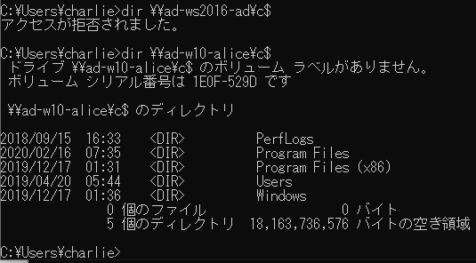

ラテラルムーブメントを阻む、通称「リモートUAC」に関して調査しました。
結果はまあそうだよねという感じになってしまいましたが、ここにメモします。

UACの効果
UAC といえば、管理者権限で実行するときに暗転して表示されるポップアップを連想されると思います。
しかしUACには、管理共有やWMIなどの機能をリモートから防ぐためのリモート UAC という機能もあります。
例えば組織内でセットアップ用のローカル管理者ユーザが存在しており、それが全端末でパスワードが同一だったとします。
攻撃者がハッシュダンプを行いNTLM ハッシュを窃取すると、昔の Windows であれば それを用いてラテラルムーブメントをバンバン行い、侵害を拡大していきます。
しかし Windows Vista 以降では UAC が搭載され、デフォルトの設定ではビルトイン管理者ではない限り管理共有やリモート実行ができなくなりました。
と、ここで話が終わりますが、色々調べてみると情報が錯綜していて、ドメインユーザの場合は書いてないし、ドメイン管理者(Domain Admins)であれば無条件にできるなどの話もあってわけわからなくなったので、個人的に調査してみました。
環境
マシン
- ドメインコントローラ (Windows Server 2016)
- クライアントA (Windows10 - 1809)
- ローカル Administrators から Domain Admins を削除
- クライアントB (Windows 7 - SP2)
- クライアントC (Windows10 - 1909)
アカウント
- alice (Domain Admins)
- bob (Domain User)
- chalie (Domain User。そして全端末のローカル Administratorsに所属)
- user ( 全クライアントで有効なローカルユーザ。Administrators に所属 / NOT Built-in)
- Administrator (全端末で有効なローカルユーザ。 Built-in Administrators)
※ローカルユーザである user と Administrators は全端末でパスワードを同一にしています。
これらの環境において、runas を使って検証を行いました。
結果
以下のようになりました。
-
ローカル/ドメイン関係なくユーザ(グループ)がローカル管理者に属していない場合、管理共有やWMIなどのリモート実行はできない。
-
Domain Admins所属のドメインユーザでもDomain Adminsをローカル管理者から外せばできなくなる
-
ローカル管理者であるビルトインではないローカルユーザは、リモートUACが有効だと管理共有・リモート実行はできない。
-
ローカル管理者であるビルトイン Administrator は、リモートUACが有効でも管理共有・リモート実行はできる。
-
ローカル管理者であるドメインユーザは、リモートUACが有効でも管理共有・リモート実行はできる。
-
Windows7、Windows10、Windows Server 2016 (ドメインコントローラ) で同じ仕様。
以下は早見表です。
| ユーザ種別と標的マシン上の権限 | リモートUAC有効*2 | リモートUAC無効*3 |
|---|---|---|
| ドメイン/ローカルユーザ (NOT Local Administrators*1) | Not Accessible | Not Accessible |
| Domain Admins ( NOT Local Administrators*4) | Not Accessible | Not Accessible |
| ローカルユーザ (Local Administrators) | Not Accessible | Accessible |
| ビルトイン Administrator (Local Administrators) | Accessible | Accessible |
| ドメインユーザ (Local Administrators) | Accessible | Accessible |
※1: Local Administrators : 標的マシンの ローカルグループである Administrators に属していること
※2: リモートUAC有効というのは、「HKEY_LOCAL_MACHINE\SOFTWARE\Microsoft\Windows\CurrentVersion\Policies\System」配下のキーが以下であること(AND)。
- LocalAccountTokenFilterPolicy が 0 あるいはキーが存在しない
- EnableLUA が 1 (→UACが有効)
※3: リモートUAC無効というのは、キーが以下の いずれか(OR) であること。
- LocalAccountTokenFilterPolicy が 1
- EnableLUA が 0 (→UACそのものが無効)
※4: 普通ならマシンがドメインに参加した時点で Domain Admins グループが Local Administrators に追加されるが、明示的にそれを削除した場合。
まとめ
リモートUACはビルトインではない"ローカルユーザ"に対して攻撃を無効化できるだけで、ビルトイン Administrator、そしてドメインユーザがローカル管理者であった場合は、リモートUACの効果がないことがわかります。
よってセットアップ用に1つのドメインユーザが全端末のローカル管理者に設定されていた場合、そのユーザの認証情報を手に入れることができたらリモートUACがあってもラテラルムーブメントは可能です。
なお Domain Adminsであれば無条件に管理共有・リモート実行が可能という話があるのは、マシンがドメインに参加したときにローカル Administrators に Domain Admins が追加されているからでしょう。
あえてローカルAdministrators から Domain Admins を削除してしまえば、Domain Admins所属ユーザは一般ユーザと同じく標的マシンに対して管理共有・リモート実行はできなくなります。
つまり Domain Admins というグループそのものにUACをバイパスして管理共有・リモート実行ができるという機能があるわけではないです。
ペンテストに関する文献を読んでも、ここらへんに関するしっかりとした記述があまり見当たらないのなぜ・・・。
これが理解できないと現在Overpass-the-hash が使われている理由の説明がしづらくなる気がします。
参考
- ユーザー アカウント制御、Windows Vista でリモートの制限の説明
https://support.microsoft.com/ja-jp/help/951016/description-of-user-account-control-and-remote-restrictions-in-windows - Administrative share
https://en.wikipedia.org/wiki/Administrative_share - Pass the Hash
https://en.hackndo.com/pass-the-hash/